A 478 GB question, asked of 4 billion Reddit rows.
The full Reddit dump for June 2023 through July 2024 lives in S3 as Hive-partitioned Parquet. It contains roughly 567 million submissions and 3.68 billion comments across every subreddit on the site. Pandas on a laptop chokes on a single month of this. Even one month is too large to fit comfortably in memory.
So the project runs on Apache Spark 3.5.1 in local mode on an EC2 t3.large, reading directly from S3 over the s3a connector. The first heavy lift was a single Spark job called 01_cricket_filtering.ipynb. It scanned every partition in the dataset and kept only rows whose subreddit appeared in our 46-name cricket allowlist. That run took roughly 3.5 hours for the comments and another 35 minutes for submissions, writing the trimmed result back to S3 as a clean partitioned Parquet table that every downstream notebook reads in seconds.
Why these dates
The window is bracketed by two events that anchor the entire narrative. October and November of 2023 are when India went undefeated through the ODI World Cup group stage and then lost the final to Australia. June 2024 is when the same core squad won the T20 World Cup against South Africa. In between sits the IPL 2024 season, which is the cricket calendar's commercial heartbeat. Three discrete emotional eras, all visible in the same Reddit corpus.
One problem statement, ten answerable questions.
The high-level question driving everything is this: how does an online fan community process collective heartbreak and collective redemption, and can we predict which posts ride the emotional wave? That's too broad to query directly, so we broke it down into ten specific questions across three analytical pillars: descriptive (EDA), text-mining (NLP), and predictive (ML).
- EDAWhich of the three kings (Dhoni, Kohli, or Rohit) generates the most Reddit activity?
- EDAHow did posting volume and sentiment change after the 2023 WC loss vs. the 2024 T20 win?
- EDAWhich subreddits dominated during each final, and did the dominant communities shift?
- EDAHow does engagement differ between player-specific posts and team India posts?
- NLPWhat is the sentiment around each player, and how does it shift during key events?
- NLPWhat are the most distinctive words used in posts about Dhoni vs Kohli vs Rohit?
- NLPWhat latent topics dominate during the 2023 loss period vs. the 2024 win period?
- MLCan we classify a post as high-engagement (top 25% score) from its features?
- MLCan we predict the number of comments a post will receive via regression?
- MLCan K-Means cluster cricket subreddits into meaningful behavioral groups?
Volume tells one story. Engagement tells another.
Q1.Who do Reddit's cricket fans actually talk about?
Across 13 months of cricket subreddits, Rohit Sharma was named in nearly twice as many posts as Dhoni. But that's a misleading scoreline, because the picture changes the moment you weight by engagement.
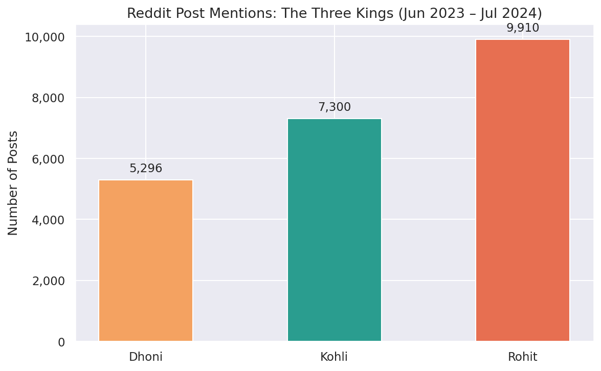
| Player | Posts | Avg score | Avg comments |
|---|---|---|---|
| Dhoni | 5,296 | 99.7 | 11.1 |
| Kohli | 7,300 | 91.6 | 14.3 |
| Rohit | 9,910 | 72.4 | 13.2 |
Q2.Heartbreak vs. redemption, side by side
The week after the 2023 WC final (the loss to Australia) generated 5,917 posts. The week after the 2024 T20 final (the win over South Africa) generated 7,217 posts. That's only 22 percent more by volume, but the engagement gap is much wider.
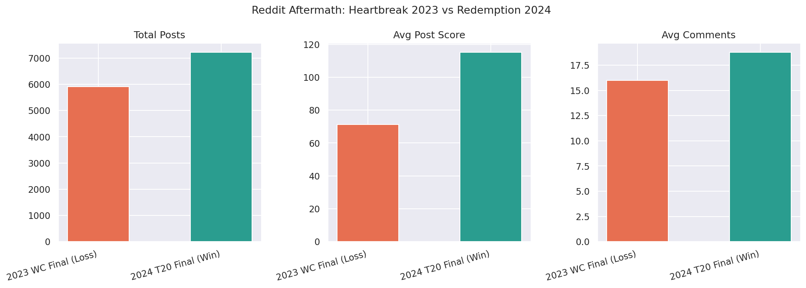
| Event | Posts | Avg score | Avg comments |
|---|---|---|---|
| 2023 WC Final (Loss) | 5,917 | 71.2 | 16.0 |
| 2024 T20 Final (Win) | 7,217 | 115.1 | 18.8 |
The redemption produced 62 percent higher average post scores and 17 percent more comments per post. Defeats compress engagement, victories amplify it. A sample of the highest-scoring posts in each window makes the tonal contrast obvious.
"It hurts" from r/IndiaCricket
"Australia are champions of the 2023 ODI World Cup" from r/Cricket Top three posts after the 2023 final loss (12,418 / 10,234 / 9,948 score)
"Rohit Sharma announces his T20I retirement" from r/Cricket
"Surely will give goosebumps man!!!!!!" from r/IndiaCricket Top three posts after the 2024 final win (18,710 / 13,559 / 13,206 score)
Q3.Did the dominant communities shift?
Both finals were dominated by the same big three subreddits: r/Cricket, r/CricketShitpost, and r/IndiaCricket. But the daily rhythm was very different.
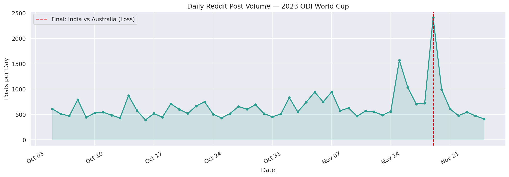
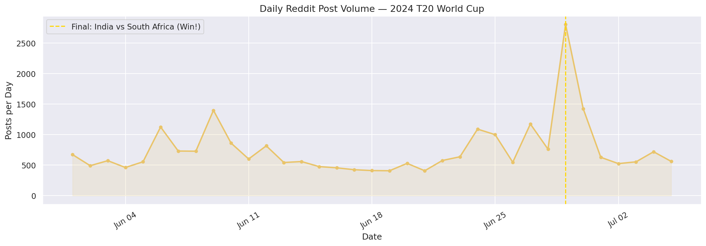
The aftermath shapes are different in a meaningful way. After the 2023 loss, volume drops fast. Grief is intense but short. After the 2024 win, volume stays elevated for nearly a week, sustained by the team's homecoming parade in Mumbai on July 4.
Q4.Player posts vs. team posts
Posts mentioning a single player generally have higher per-post scores than team India posts in the same windows. But team India posts dominate by volume during defining moments. The final-day spikes are more than 80 percent team-tagged, not player-tagged. Individual narratives like a Rohit retirement post or a Kohli farewell act as emotional anchors. Team coverage acts as the news ticker.
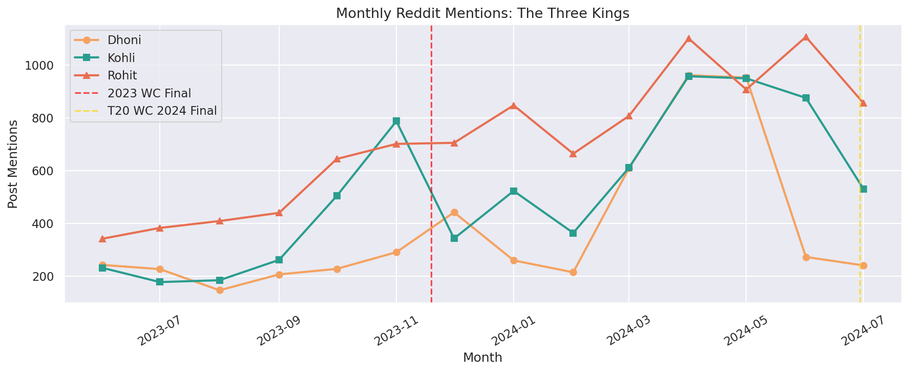
The mood, in numbers.
Q5.Sentiment, ranked by player and event
VADER's compound score gives every post or comment a number between -1 (very negative) and +1 (very positive). Aggregated, the per-player ranking is unambiguous.
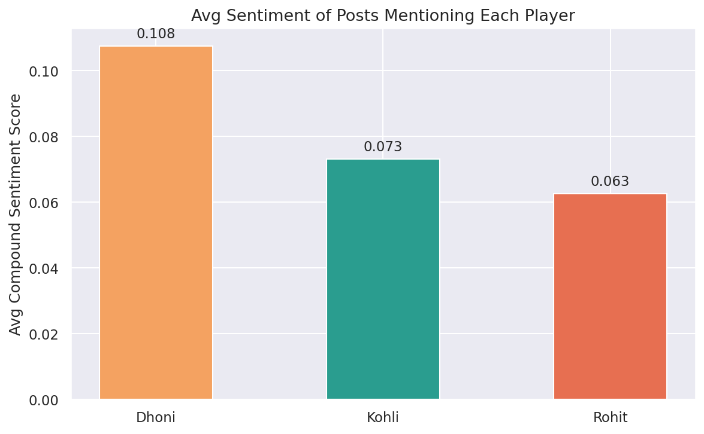
| Player | Posts | Avg sentiment |
|---|---|---|
| Dhoni | 5,296 | +0.108 |
| Kohli | 7,300 | +0.073 |
| Rohit | 9,910 | +0.063 |
Dhoni's fanbase is the most consistently positive, which lines up with his per-post engagement edge in Q1. Less volume, more love. Kohli sits in the middle. Rohit, despite being the active captain and the most-mentioned player overall, has the lowest average sentiment. That's a function of being closest to the spotlight when things go wrong.
Across event periods, the pattern is even cleaner.
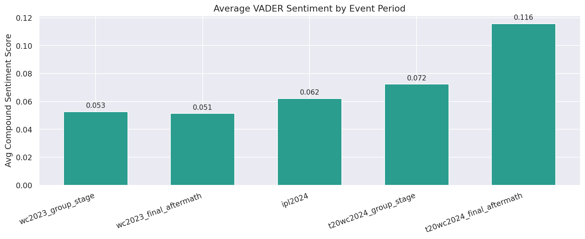
| Period | Avg sentiment |
|---|---|
| WC 2023 group stage | +0.053 |
| WC 2023 final aftermath | +0.051 |
| IPL 2024 | +0.062 |
| T20 WC 2024 group stage | +0.072 |
| T20 WC 2024 final aftermath | +0.116 |
The post-win window is more than twice as positive as the post-loss window. Reddit's sentiment closely tracks the scoreboard.
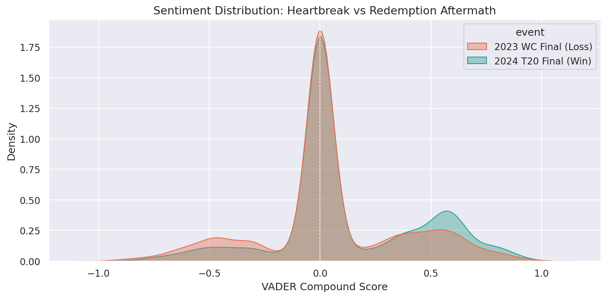
Q6.The keywords each era was made of
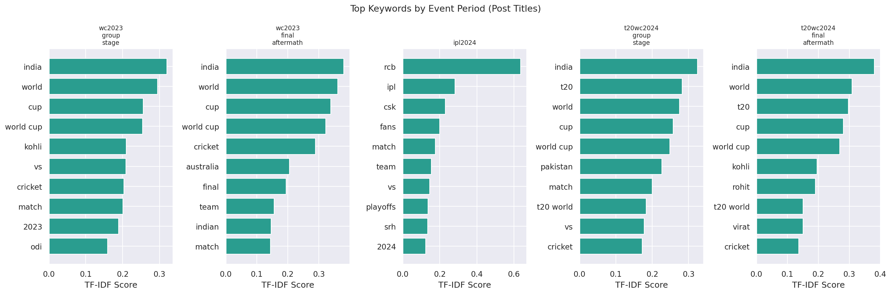
The TF-IDF keyword extraction lights up exactly the moments you would expect. Australia, Mitchell, final, lost dominate the 2023 aftermath. Champion, Rohit, retirement, parade, Mumbai dominate the 2024 aftermath. The keyword shape between the two aftermaths is a textbook tonal inversion.
Q7.Latent topics from LDA
We trained a 6-topic LDA on a 50,000-comment sample. Topic 5 emerged as the clearest player-centric topic, anchored by kohli, gill, pitch, rohit, score. That's performance discussion. Topic 4 captured the geopolitical and world-cup dimension (world, australia, wc). Topic 2 surfaced the long-running Reddit complaint genre about pitches and the ICC. Topic 0 picked up the meme and reaction style of r/CricketShitpost (lol, brohit, bro).
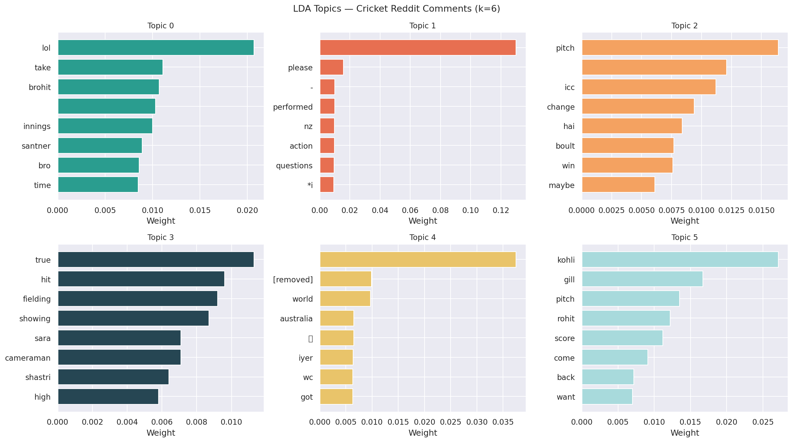
What can, and can't, be predicted.
Q8.Can we classify high-engagement posts?
We labeled the top 25 percent of posts by score as "high engagement" and trained a Random Forest classifier (50 trees, depth 6) on features including hour-of-day, day-of-week, month, player mentions, subreddit (one-hot), and event period (one-hot). The pipeline runs entirely in Spark MLlib.
An AUC of 0.67 is meaningfully better than chance (0.5) but well short of strong. The feature importances make the reason obvious.
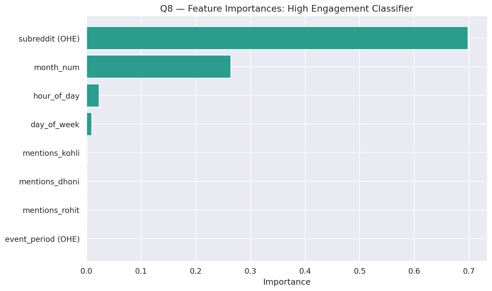
Subreddit accounts for roughly 70 percent of the model's predictive signal. Where you post matters enormously more than what you post about, when you post, or which player you mention. A meme on r/CricketShitpost will out-engage a serious analysis on a mid-tier IPL franchise sub almost every time. Time-of-day and player mentions are nearly noise. This is a real and useful finding. Engagement is community-driven, not content-driven.
Q9.Can we predict comment count via regression?
An R² of 0.016 means the model explains less than 2 percent of the variance in comment count. The predicted-vs-actual scatter is informative. Almost all predictions cluster in a narrow band while actual values fan out massively.
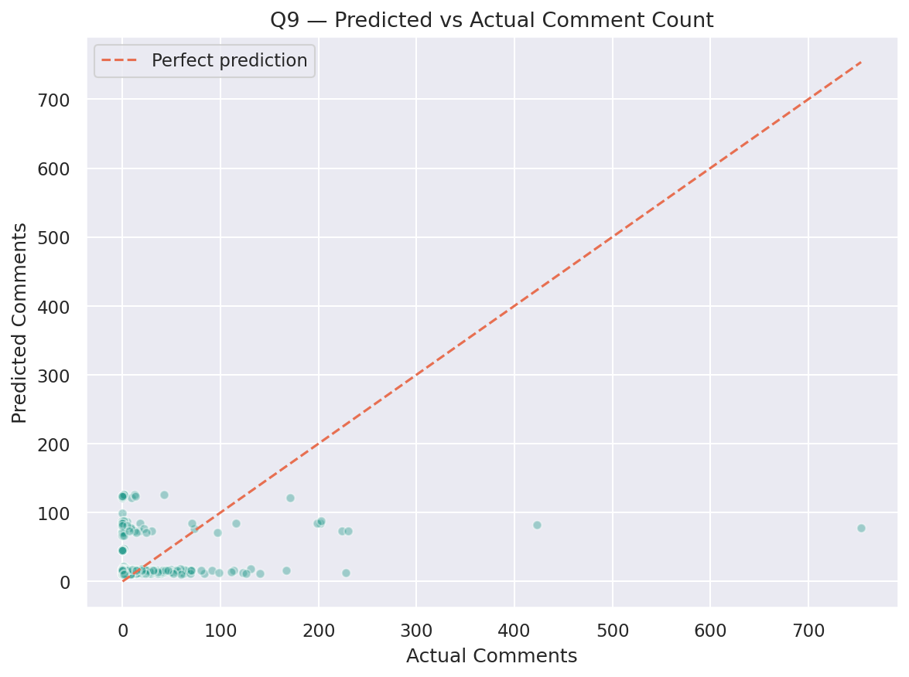
Q10.Clustering subreddits by behavior
K-Means on subreddit-level features (post count, avg score, avg comments, player-mention ratios, avg post hour) with k=4 produces interpretable groups despite a modest silhouette score of 0.195.
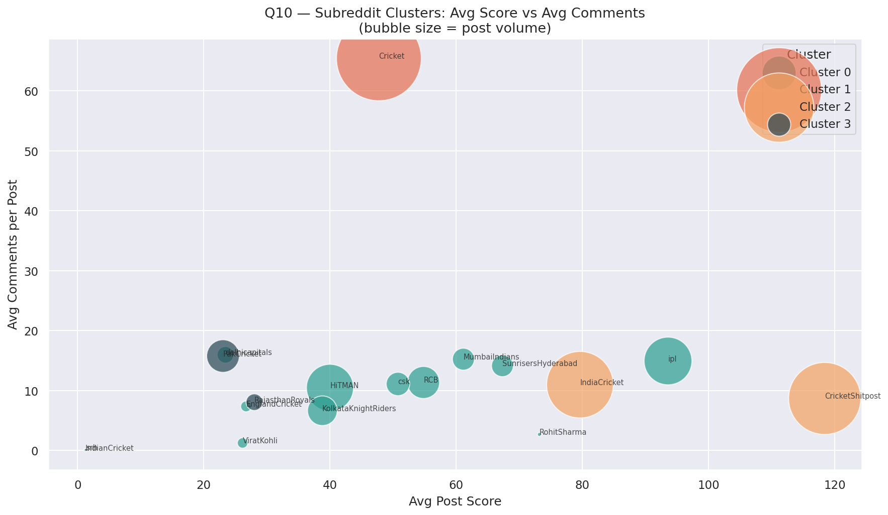
| Cluster | Members | Profile |
|---|---|---|
| 0 | ipl, HiTMAN, RCB, KKR, csk, MumbaiIndians, SRH, DC, EnglandCricket, ViratKohli, RohitSharma, IndianCricket | Team and player fan subs. Moderate volume, moderate engagement, fan-club tone. |
| 1 | r/Cricket | The mainstream giant. By far the highest comment-per-post (65.5), the global cricket discussion hub. |
| 2 | CricketShitpost, IndiaCricket | The high-score humor and India cluster. Viral content factories with the highest avg post scores. |
| 3 | PakCricket, RajasthanRoyals, srh | The rivalry and lower-engagement cluster. Smaller communities with distinct cultures. |
The clustering recovers a structure that lines up with what cricket fans intuitively know. r/Cricket is uniquely conversational. r/CricketShitpost manufactures virality. Fan-club subs behave like brand communities. Rival and niche subs cluster separately. K-Means picked all of that up from posting-pattern features alone, no text needed.
Five recommendations the data actually supports.
The findings translate into concrete decisions for anyone whose work intersects with cricket fan engagement.
1. For sports broadcasters (Hotstar, Star Sports, ESPN)
Post-match content should hit r/Cricket and r/CricketShitpost first. Together they account for nearly half of all cricket Reddit volume and the highest engagement multipliers. Fan-team subs (RCB, MI, CSK) deliver narrower but more loyal audiences. Subreddit choice matters roughly 70 times more than the time of day you post, so optimize for placement, not timing.
2. For sponsors and player-management agencies
Dhoni delivers the highest sentiment per mention (+0.108) despite being effectively retired from international cricket. His fanbase is the most positive and most loyal. Sponsorship ROI for "endearment" campaigns favors Dhoni. ROI for "reach" favors Rohit. Kohli is the all-rounder middle ground, with high volume, high sentiment, and broad appeal.
3. For the BCCI's communications office
Recovery from a major loss takes roughly 3 days of declining volume and around 5 days for sentiment to return to baseline. Victory engagement, by contrast, sustains for 5 to 7 days due to homecoming events. Plan press, sponsor reveals, and merchandise drops accordingly. Don't push through grief, but absolutely capitalize on the seven-day celebration tail.
4. For Reddit infrastructure planning
Cricket subreddits experience predictable order-of-magnitude traffic surges around major finals, with daily volume rising 5 to 10 times above baseline. The sustained tail after wins (versus the sharp drop after losses) means autoscaling logic that decays linearly will under-provision celebration windows. Win-tail capacity needs to stay elevated longer than loss-tail capacity.
5. For sports journalists and content creators
Two narrative wells consistently produce viral posts. The first is retirement and farewell content ("Rohit Sharma announces his T20I retirement", 13,559 score). The second is moment-of-defeat empathy posts ("It hurts", 10,234 score). Single-emotion, low-word headlines outperform analytical ones in the immediate aftermath of major events. Save the deep dives for 48 hours later, when the audience is ready for them.
How this got built.
Everything runs on Apache Spark 3.5.1 in local mode on a single t3.large EC2 instance reading from S3 over the s3a connector. Sentiment is VADER. Topic modeling is MLlib LDA. Both predictive models are MLlib Random Forests, and clustering is MLlib K-Means with StandardScaler. The full pipeline is reproducible from the seven notebooks in the repo.
| Notebook | Purpose |
|---|---|
00_data_exploration.ipynb | Schema validation, partition coverage, top-subreddit baselines |
01_cricket_filtering.ipynb | The big Spark job, filters 478 GB down to 242k posts plus 6.7M comments |
02_eda_three_kings.ipynb | Q1, Q4 covering player engagement and monthly trends |
03_heartbreak_2023wc.ipynb | Q2, Q3 covering the 2023 WC final aftermath |
04_redemption_2024t20.ipynb | Q2, Q3 covering the 2024 T20 WC win and head-to-head |
05_nlp_sentiment_topics.ipynb | Q5, Q6, Q7 covering VADER, TF-IDF, LDA |
06_ml_models.ipynb | Q8, Q9, Q10 covering the classifier, regressor, and clustering |